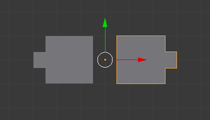
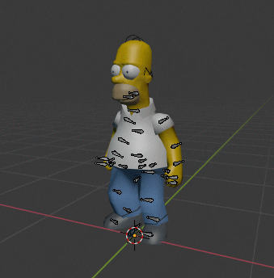

-
 Work Queue
Work Queue
-
My Ticket
Create a Ticket for your problem
Your Problem
Description
Attachment
Image files such as jpg, jpeg, png and svg etc...
Drop your image here or click to upload
Image files such as jpg, jpeg, png and svg etc...
Drop your image here or click to upload
01:00:00
What is the primary use of the "Array" modifier in complex modeling?

To smooth the mesh
Right mouse button
Spacebar
Which file format is commonly used to save Blender projects?
.blend
.jpg
.mp4
.docx
What is the default shape that appears when you start a new project in Blender?
Sphere
Cube
Cylinder
Cone
Which key do you press to switch to Edit Mode in Blender?

Tab
Shift
Ctrl
Alt
What is the purpose of the 'Extrude' tool in Blender?

To rotate objects
To scale objects
To create new geometry by extending faces
To delete objects
According to the image below, which viewport shading mode is currently active in Blender?

Wireframe
Solid
Material Preview
Rendered
Which shortcut key is used to render an image in Blender?

F12
F1
F5
F10
What is the 'Modifier' in Blender used for?

To change the color of objects
To apply non-destructive changes to objects
To save the project
To import textures
Which tool is used to move objects in Blender?

Scale tool
Rotate tool
Grab tool
Extrude tool
What does the 'Subdivision Surface' modifier do?

Adds more detail to the mesh by subdividing faces
Changes the color of the surface
Deletes faces from the mesh
Combines multiple objects into one
What is the function of the "Screw" modifier?

Adds a spiral animation
Creates a lathed shape by rotating a profile
Simulates torque
Bends the mesh
What is the benefit of using "Crease" values with Subdivision Surface?

It reduces render time
It sharpens edges without adding geometry
It improves UV mapping
It applies textures
What is the "Knife Project" tool used for?

To cut through geometry using another object's shape
To slice UV maps
To animate cuts
To bake normals
What does the "Limit Merge" option in the Mirror modifier do?

Prevents merging of vertices
Merges vertices within a set distance
Limits the mirror axis
Applies the mirror only to selected faces
What is the purpose of the "Bisect" tool in Edit Mode?

To mirror geometry
To cut the mesh along a plane
To unwrap UVs
To apply modifiers
What does "Topology Flow" refer to in modeling?
The direction of lighting
The arrangement of edge loops for deformation
The order of modifier
The animation path
What is the "Bounding Box" display mode used for?
To show only the wireframe
To display object as a simple box for performance
To preview UVs
To show normals
What does the "Remesh" modifier do?

Recalculates normals
Rebuilds the mesh with uniform topology
Applies a mirror
Bakes the mesh
What is the purpose of the "Displace" modifier?

To move the object
To deform geometry using a texture
To apply a Boolean
To unwrap UVs
What does the "Weld" modifier do?
Joins objects
Merges nearby vertices
Applies a solidify effect
Bakes lighting
What is the "Bounding Box" used for in pivot settings?
To center the camera
To align the object to the world origin
To use the average center of selected objects for transformation
To reset the object's location
What is the benefit of using "Snapping" with "Increment" mode?
It aligns objects to the camera
It allows precise movement in grid steps
It snaps to UV islands
It locks the object in place
What does the "Geometry Nodes" system allow you to do in Blender?
Animate bones
Create procedural models and effects using node-based logic
Paint textures
Simulate physics
Need help?